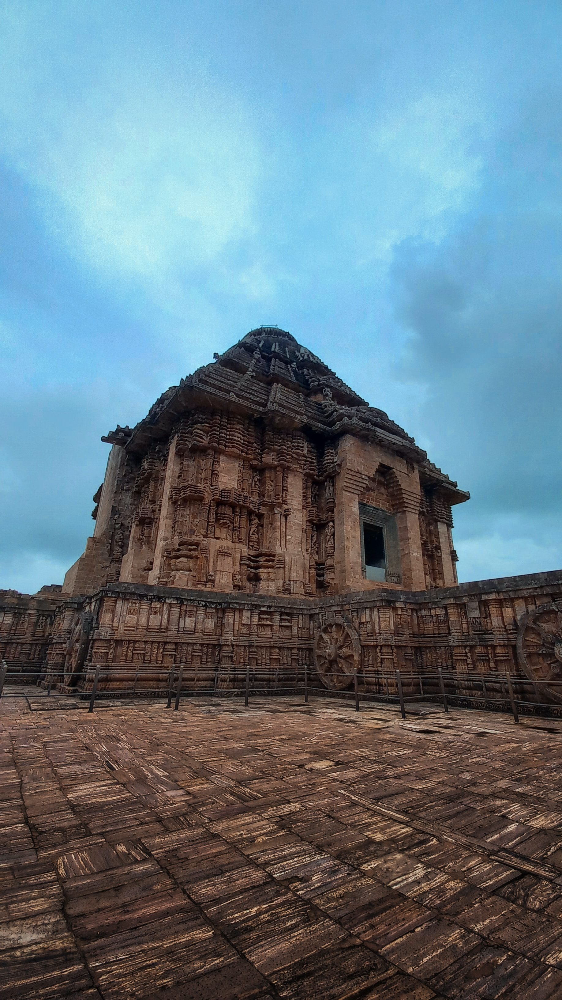

Odisha
The eastward segment of our country reflects the key location of this state . Odisha refers to such a state that is densely packed with ample quantity of natural deposits . This state performed a crucial part in the sphere of economic system, as it acquired a leading position outpacing several other states in India . The opulent cultural heritage of this state mainly denotes it’s essence of prominence . Apart from it’s culture, the popularity of this state primarily lies in the domain of beautifully sculpted shrines . The dominance of tribal cultures aids in enhancing the speciality of this state
